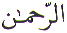
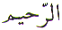

The Arabic letter
Ra ( ) is equivalent to the letter 'R'
in the English alphabet. In the normal Arabic character set Letter
Ra (
) is equivalent to the letter 'R'
in the English alphabet. In the normal Arabic character set Letter
Ra ( ) is 10. In the numerical character
set, Abjad, the Letter Ra (
) is 10. In the numerical character
set, Abjad, the Letter Ra ( ) has
the value of 200 and positioned as the 20th Letter. This article
is about the spiritual meaning of the Letter Ra (
) has
the value of 200 and positioned as the 20th Letter. This article
is about the spiritual meaning of the Letter Ra ( ).
).
Every chapter in the
Quran (except chapter 9) starts with Bismillah hir Rahman nir Raheem. In the verse Bismillah, we have the Ism Zaat -
Proper Name Allah of our Creator. And immediately
following the Name Allah, we have two Ism Sifaat
- Attributes of Allah. Both these Attributes of Allah begin with
the Letter Ra ( ).
).
These Attributes of Allah
are Ar Rahman -
Most Gracious
and Ar Raheem - Most Merciful. The important thing to observe is
that both these Attributes of Allah Ar Rahman
and Ar Raheem
are composed entirely of Muqattaat
Letters. Where as the remaining Attributes of Allah starting with
the Letter Ra ( ) are not
! These remaining Attributes are
Rabb, Ar Razzaq, Ar Rafi, Ar Raqeeb, Ar Rauf and Ar
Rasheed. That explains
why the two Attributes of Allah, Ar Rahman
and Ar Raheem were chosen out of all the other
Attributes starting with the Letter Ra (
) are not
! These remaining Attributes are
Rabb, Ar Razzaq, Ar Rafi, Ar Raqeeb, Ar Rauf and Ar
Rasheed. That explains
why the two Attributes of Allah, Ar Rahman
and Ar Raheem were chosen out of all the other
Attributes starting with the Letter Ra ( ).
But it does not explain why Ar
Rahman and Ar Raheem in particular were chosen out of the 99 Attributes
of Allah. Since there are other Attributes of Allah that are composed
entirely of Muqattaat Letters.
).
But it does not explain why Ar
Rahman and Ar Raheem in particular were chosen out of the 99 Attributes
of Allah. Since there are other Attributes of Allah that are composed
entirely of Muqattaat Letters.
The answer is in the above Hadees. The first Attribute is Ar Rahman because of the connection with the womb Ar Rahm. The womb is the place of our first stage of development as a human being. To read Bismillah, we must first be created. We can only be questioned about our activities if we come into existence. The first Ism Sifaat of Allah mentioned in the Quran is in the Verse Bismillah. And that Ism is Ar Rahman . And to highlight the beauty and importance of this Ism Sifaat - Attribute, Allah has also revealed an entire Chapter in the Quran which is named Ar Rahman. And in this Chapter Allah asks us:
Allah asks us the above question, not once, not twice, not three times but 31 times in Verses:
What is 31 ? It is Alif
( ) = 1 and Laam (
) = 1 and Laam ( )
= 30. Whose favours can we not deny ? Our Rabb's
- Lord's. So we have Alif (
)
= 30. Whose favours can we not deny ? Our Rabb's
- Lord's. So we have Alif ( ), Laam
(
), Laam
( ) and Ra (
) and Ra ( )
-
)
-  .
.
The Letter Ra ( ) is used as a Muqattaat Letter in
the opening verses of six Chapters of the Quran as follows:
) is used as a Muqattaat Letter in
the opening verses of six Chapters of the Quran as follows:

The important point to
notice in the above references is that Allah's Attribute Rabb is used in Chapters
13 and 14. And what did Jibreel ( )
say to Muhammad
)
say to Muhammad when he first appeared
?
when he first appeared
?
When the first revelation
came, Jibreel ( ) said to Muhammad
) said to Muhammad
 :
:
Allah's Attribute Rabb was the first Attribute
that was mentioned by Jibreel ( ). If
we look at the prayers of Anbiyaa (Messenger of Allah
). If
we look at the prayers of Anbiyaa (Messenger of Allah  )
we also find they used the Attribute Rabb in their prayers as shown in the Quran. And
the best prayer which was the favourite of Muhammad
)
we also find they used the Attribute Rabb in their prayers as shown in the Quran. And
the best prayer which was the favourite of Muhammad is:
is:

This prayer is not specific about any 'particular' need or desire and yet it covers or encompasses EVERYTHING good in this world and in the next world. This prayer does not leave out anything that is good.
If we look again in the Quran, right at the start we find that after the Verse Bismillah, Rabb is the first Attribute that is mentioned:
And at the end of the Quran we also find:
Notice how the Name Allah is used twice in Chapter 112 and the Attribute Rabb is used two times after that, first in Chapter 113 and next in the final chapter, Chapter 114. The Attribute Rabb is very special. All Praise is for Allah the Rabb of the worlds. Therefore we must Praise our Rabb.
And we must reflect at His works with heart and mind by observing with our eyes and listening with our ears. Then we begin to understand His signs.
The Letter Ra ( ) is the 14th Letter, out of 14 Muqattaat
Letters, in terms of numerical weighting. In the Abjad format,
the Letter Ra (
) is the 14th Letter, out of 14 Muqattaat
Letters, in terms of numerical weighting. In the Abjad format,
the Letter Ra ( ) is the
20th Letter. The numerical value of the Letter Ra (
) is the
20th Letter. The numerical value of the Letter Ra ( ) is 200.
) is 200.
In the Verse Bismillah, which we have been looking at earlier, we have
2 Attributes of Allah, Ar
Rahman and Ar Raheem, both starting with the Letter Ra ( ). And also, in the Verse Bismillah, out of the 19 Letters, 18 are Muqattaat Letters.
The Letter Ba (
). And also, in the Verse Bismillah, out of the 19 Letters, 18 are Muqattaat Letters.
The Letter Ba ( ) is the odd one
out. The numerical value of the Letter Ba (
) is the odd one
out. The numerical value of the Letter Ba ( )
is 2.
)
is 2.
The above two Letters
Ra ( ) and Ba (
) and Ba ( )
can only be combined in two ways. No more.
)
can only be combined in two ways. No more.
Rabb - 

Barr -

And Allah has given us both combinations of the above two letters as His Attributes:
1 Alif Laam Meem = (

 )
)
2 Alif Laam Ra = (

 )
)
3 Alif Laam Meem Ra = (


 )
)
4 Alif Laam Meem Saad = (


 )
)
5 Saad = ( )
)
6 Kaaf Ha Ya Ayn Saad = (


 )
)
7 Ha Meem = (
 )
)
8 Ayn Seen Qaf = (

 )
)
9 Qaf = ( )
)
10 Ta Seen = (
 )
)
11 Ta Seen Meem = (

 )
)
12 Ta Ha = (
 )
)
13 Ya Seen = (
 )
)
14 Noon = ( )
)
The amazing thing about all this is that Ar Rahman is the only Ism Sifaat that can be written by using groups of the above Muqattaat Letters as used in the Quran. That is without breaking the combinations. From above we have:
2 Alif Laam Ra = (

 )
)
7 Ha Meem = (
 )
)
14 Noon = ( )
)
And to complete it all
the Letter Noon ( ) is the Last Letter
to be used as a Muqattaat Letter. And it is used in Chapter 68
of the Quran. And 68 reduces to (6 + 8 = ) 14 . And
there are 14 Muqattaat Letters. And speaking
of Muqattaat Letters, even the name of our Book, the Quran
) is the Last Letter
to be used as a Muqattaat Letter. And it is used in Chapter 68
of the Quran. And 68 reduces to (6 + 8 = ) 14 . And
there are 14 Muqattaat Letters. And speaking
of Muqattaat Letters, even the name of our Book, the Quran  is made up of Muqattaat Letters.
This article completes all the Muqattaat Letters.
is made up of Muqattaat Letters.
This article completes all the Muqattaat Letters.
May Allah Ar Rahman Ar Raheem shower His Compassion and Mercy on all the Muslims especially in this day and age where the Muslims are being persecuted. Ameen.
| BACK |